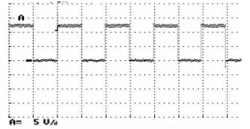

5540BN SPEED SIGNAL CHECK
- Path
- Test > 55 ELECTRICAL EQUIPMENT > 5540 EXTERIOR LIGHTING > 5540B HEADLAMPS > 5540BN SPEED SIGNAL CHECK
- Kind
- test / check procedure
- Applies to
- all engines; all production periods; only with equipment: ESP
- Interactive page
- https://sloeber94.github.io/elrnDB-fCrm/en/#/194003974
Applies to: all engines; all production periods; only with equipment: ESP
STEP | CHECK TO BE PERFORMED | RESOLUTION IF THE CHECK IS NOT OK |
|---|---|---|
1 | Turn on the diagnostic tester and go to Instruments. In Voltmeter mode, select a full scale deflection value of 20 V and a time base of 2 s. Connect the voltmeter red probe to Pin 10 of the master headlamp 14-way connector and the red probe to earth. Turn one wheel by hand and when the speed is 4-6 km/h press the START button. Check that the signal acquired looks the attached graph without any dips. The test can be considered over | Move on to Step 2 |

STEP | CHECK TO BE PERFORMED | RESOLUTION IF THE CHECK IS NOT OK |
|---|---|---|
2 | Check for wiring continuity between Pin 28 of Body Computer connector B and Pin 10 of the master headlamp 14-way connector. | The test can be considered over |
3 | Check for wheel speed signal errors in the ABS control unit | Continue as instructed by the diagnostic equipment |
4 | Check for wiring continuity between the ABS control unit and the Body Computer | Replace Body Computer Op. 5505A32 BODY COMPUTER - R.R |
5 | Check that the fault is no longer present | Replace the Master headlamp |